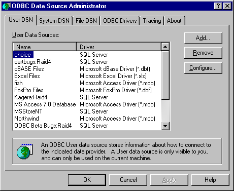
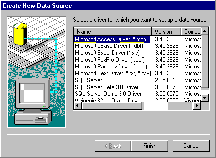
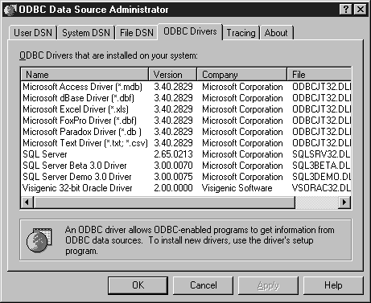
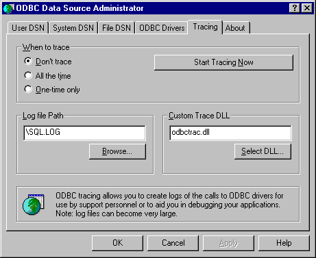

Conformance
Version Introduced: ODBC 2.0
Summary
SQLManageDataSources displays a dialog box with which users can set up, add, and delete data sources in the system information.
Syntax
BOOL SQLManageDataSources(
HWND hwnd);
Arguments
hwnd
[Input]
Parent window handle.
Returns
SQLManageDataSources returns FALSE if hwnd is not a valid window handle. Otherwise, it returns TRUE.
Diagnostics
When SQLManageDataSources returns FALSE, an associated *pfErrorCode value may be obtained by calling SQLInstallerError. The following table lists the *pfErrorCode values that can be returned by SQLInstallerError and explains each one in the context of this function.
| *pfErrorCode | Error | Description |
| ODBC_ERROR_ GENERAL_ERR |
General installer error | An error occurred for which there was no specific installer error. |
| ODBC_ERROR_ REQUEST_ FAILED |
Request failed | The call to ConfigDSN failed. |
| ODBC_ERROR_ INVALID__HWND |
Invalid window handle | The hwnd argument was invalid or NULL. |
| ODBC_ERROR_ OUT_OF_MEM |
Out of memory | The installer could not perform the function because of a lack of memory. |
SQLManageDataSources initially displays the ODBC Data Source Administrator dialog box.

The dialog box displays the data sources listed in the system information under three tabs: User DSN, System DSN, and File DSN. If the user double-clicks a data source or selects a data source and clicks Configure, SQLManageDataSources calls ConfigDSN in the setup DLL with the ODBC_CONFIG_DSN option.
If the user clicks Add, SQLManageDataSources displays the Create New Data Source dialog box, shown in the following figure.

The dialog box displays a list of installed drivers. If the user double-clicks a driver or selects a driver and clicks OK, SQLManageDataSources calls ConfigDSN in the setup DLL and passes it the ODBC_ADD_DSN option.
If the user selects a data source and clicks Remove, SQLManageDataSources asks if the user wants to delete the data source. If the user clicks Yes, SQLManageDataSources calls ConfigDSN in the setup DLL with the ODBC_REMOVE_DSN option.
The Add Data Source dialog box is used to add or delete either a user data source, a system data source, or a file data source.
System DSNs
The Create New Data Source dialog box allows you to add a system data source to your local computer or delete one, or to set the configuration for a system data source.
A data source set up with a system data-source name (DSN) can be used by more than one user on the same machine. It can also be used by a system-wide service, which can then gain access to the data source even if no user is logged onto the machine.
A System DSN is registered in the HKEY_LOCAL_MACHINE entry in the system information, rather than the HKEY_CURRENT_USER entry. It is not tied to one user who logs on with his or her particular user name and password, but can be used by any user of that machine, or by an automatic system-wide service. The System DSN is, however, tied to one machine. It does not support the capability of using remote DSNs between machines. System DSNs are registered as follows in the system information:
HKEY_LOCAL_MACHINE
SOFTWARE
ODBC
ODBC.INI
User DSNs
DSNs created for individual users will be called User DSNs, to distinguish them from System DSNs. User DSNs are registered as follows in the system information:
HKEY_CURRENT_USER
SOFTWARE
ODBC
ODBC.INI
File DSNs
A file data source does not have a data source name, as does a machine data source, and is not registered to any one user or machine. The connection information for that data source is contained in a .dsn file that can be copied to any machine. A file data source can be shareable, in which case the .dsn file resides on a network and can be used simultaneously by multiple users on the network as long as the user has the appropriate driver installed. A file data source can also be unshareable, in which case it can only be used on a single machine.
For more information on file data sources, see “Connecting Using File Data Sources” in Chapter 6, “Connecting to a Data Source or Driver,” or see SQLDriverConnect.
If the user clicks the ODBC Drivers tab in the ODBC Data Source Administrator dialog box, SQLManageDataSources displays a list of ODBC driver installed on the system, and information about the drivers. The date displayed is the creation date of the driver.

If the user clicks the Tracing tab in the ODBC Data Source Administrator dialog box, SQLManageDataSources displays tracing options.

If the user selects or clears any of the check boxes in the When to trace section of the tab page, and clicks OK, SQLManageDataSources sets the Trace keyword in the [ODBC] section of the system information to 1 or 0 accordingly. If All the time is chosen, tracing is performed for each subsequent connection; if One-time only is chosen, tracing is performed for the duration of the connection only.
If the user clicks Start Tracing Now, and then clicks OK, SQLManageDataSources enables tracing manually for all applications currently running on the machine.
If the user specifies the name of a trace file in the Log file Path text box, then clicks OK, SQLManageDataSources sets the TraceFile keyword in the [ODBC] section of the system information to the specified name.
For more information on tracing, see “Tracing” in Chapter 17, “Programming Considerations.” For more information about the Trace, TraceAutoStop, and TraceFile keywords, see “ODBC Subkey” in Chapter 19, “Configuring Data Sources.”
Related Functions
| For information about | See |
| Creating data sources | SQLCreateDataSource |